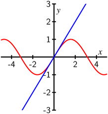
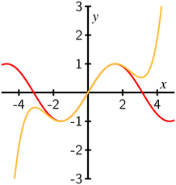
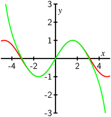
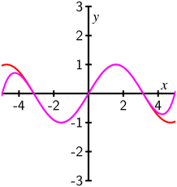
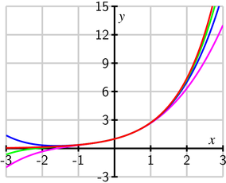
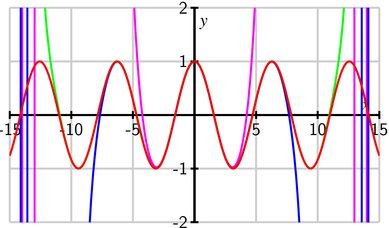
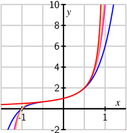

Section8.5Taylor Polynomials and Taylor Series¶ permalink
{In this section, we strive to understand the ideas generated by the following important questions:
What is a Taylor polynomial? For what purposes are Taylor polynomials used?
What is a Taylor series?
How are Taylor polynomials and Taylor series different? How are they related?
How do we determine the accuracy when we use a Taylor polynomial to approximate a function?
}
Subsection8.5.1Introduction
In our work to date in Chapter 8, essentially every sum we have considered has been a sum of numbers. In particular, each infinite series that we have discussed has been a series of real numbers, such as
In the remainder of this chapter, we will expand our notion of series to include series that involve a variable, say \(x\). For instance, if in the geometric series in Equation (8.5.1) we replace the ratio \(r = \frac{1}{2}\) with the variable \(x\), then we have the infinite (still geometric) series
Here we see something very interesting: since a geometric series converges whenever its ratio \(r\) satisfies \(|r|\lt 1\), and the sum of a convergent geometric series is \(\frac{a}{1-r}\), we can say that for \(|x| \lt 1\),
Note well what Equation (8.5.3) states: the non-polynomial function \(\frac{1}{1-x}\) on the right is equal to the infinite polynomial expresssion on the left. Moreover, it appears natural to truncate the infinite sum on the left (whose terms get very small as \(k\) gets large) and say, for example, that
\[
1 + x + x^2 + x^3 \approx \frac{1}{1-x}
\]
for small values of \(x\). This shows one way that a polynomial function can be used to approximate a non-polynomial function; such approximations are one of the main themes in this section and the next.
In Preview Activity , we begin our explorations of approximating non-polynomial functions with polynomials, from which we will also develop ideas regarding infinite series that involve a variable, \(x\).
Preview Activity
Preview Activity showed how we can approximate the number \(e\) using linear, quadratic, and other polynomial functions; we then used similar ideas in Preview Activity to approximate \(\ln(2)\). In this activity, we review and extend the process to find the ``best" quadratic approximation to the exponential function \(e^x\) around the origin. Let \(f(x) = e^x\) throughout this activity.
Find a formula for \(P_1(x)\), the linearization of \(f(x)\) at \(x=0\). (We label this linearization \(P_1\) because it is a first degree polynomial approximation.) Recall that \(P_1(x)\) is a good approximation to \(f(x)\) for values of \(x\) close to \(0\). Plot \(f\) and \(P_1\) near \(x=0\) to illustrate this fact.
Solution
We know that
\[
P_1(x) = f(0) + f'(0)x = 1+x.
\]
Since \(P_1(0) = f(0) = 1\) and \(P'_1(0) = f'(0) = 1\), the graphs of \(P_1\) and \(f\) agree at \(x=a\) and have the same slope at \(x=0\) (which means they go in the same direction at \(x=0\)). This is why \(P_1(x)\) is a good approximation to \(f(x)\) for values of \(x\) close to \(0\).
Since \(f(x) = e^x\) is not linear, the linear approximation eventually is not a very good one. To obtain better approximations, we want to develop a different approximation that “bends” to make it more closely fit the graph of \(f\) near \(x=0\). To do so, we add a quadratic term to \(P_1(x)\). In other words, we let
\[
P_2(x) = P_1(x) + c_2x^2
\]
for some real number \(c_2\). We need to determine the value of \(c_2\) that makes the graph of \(P_2(x)\) best fit the graph of \(f(x)\) near \(x=0\).
Remember that \(P_1(x)\) was a good linear approximation to \(f(x)\) near \(0\); this is because \(P_1(0) = f(0)\) and \(P'_1(0) = f'(0)\). It is therefore reasonable to seek a value of \(c_2\) so that
\begin{align*}
P_2(0) \amp = f(0),\\
P'_2(0) \amp = f'(0), \ \mbox{and}\\
P''_2(0) \amp = f''(0).
\end{align*}
Remember, we are letting \(P_2(x) = P_1(x) + c_2x^2\).
Calculate \(P_2(0)\) to show that \(P_2(0) = f(0)\).
Solution
Calculate \(P'_2(0)\) to show that \(P'_2(0) = f'(0)\).
Solution
A simple calculation shows \(P'_2(x) = P'1(x) + 2c_2x\). So \(P'_2(0) = P'_1(0) = 1 = f'(0)\) as desired.
Calculate \(P''_2(x)\). Then find a value for \(c_2\) so that \(P''_2(0) = f''(0)\).
Solution
A simple calculation shows \(P''_2(x) = 2c_2\). So \(P''_2(0) = 2c_2\). To have \(P''_2(0) = f''(0)\) we must have \(2c_2 = f''(0)\) or \(c_2 = \frac{f''(0)}{2} = \frac{1}{2}\).
Explain why the condition \(P''_2(0) = f''(0)\) will put an appropriate ``bend" in the graph of \(P_2\) to make \(P_2\) fit the graph of \(f\) around \(x=0\).
Solution
The second derivative of a function tells us the concavity of the function. Concavity measures how the slopes of the tangent lines to the graph of the function are changing. This tells us how much bend there is in the graph. So if \(P''_2(0) = f''(0)\), then \(P_2\) will have the same bend in it at \(x=0\) as \(f\) does. This will make the graph of \(P_2\) mold to the graph of \(f\) around \(x=0\).
Preview Activity illustrates the first steps in the process of approximating complicated functions with polynomials. Using this process we can approximate trigonometric, exponential, logarithmic, and other nonpolynomial functions as closely as we like (for certain values of \(x\)) with polynomials. This is extraordinarily useful in that it allows us to calculate values of these functions to whatever precision we like using only the operations of addition, subtraction, multiplication, and division, which are operations that can be easily programmed in a computer.
We next extend the approach in Preview Activity to arbitrary functions at arbitrary points. Let \(f\) be a function that has as many derivatives at a point \(x=a\) as we need. Since first learning it in Section 1.8, we have regularly used the linear approximation \(P_1(x)\) to \(f\) at \(x=a\), which in one sense is the best linear approximation to \(f\) near \(a\). Recall that \(P_1(x)\) is the tangent line to \(f\) at \((a,f(a))\) and is given by the formula
\[
P_1(x) = f(a) + f'(a)(x-a).
\]
If we proceed as in Preview Activity , we then want to find the best quadratic approximation
\[
P_2(x) = P_1(x) + c_2(x-a)^2
\]
so that \(P_2(x)\) more closely models \(f(x)\) near \(x=a\).
Consider the following calculations of the values and derivatives of \(P_2(x)\):
To make \(P_2(x)\) fit \(f(x)\) better than \(P_1(x)\), we want \(P_2(x)\) and \(f(x)\) to have the same concavity at \(x=a\). That is, we want to have
\[
P''_2(a) = f''(a).
\]
This implies that
\[
2c_2 = f''(a)
\]
and thus
\[
c_2 = \frac{f''(a)}{2}.
\]
Therefore, the quadratic approximation \(P_2(x)\) to \(f\) centered at \(x=0\) is
The defining property of these polynomials is that for each \(n\), \(P_n(x)\) must have its value and all its first \(n\) derivatives agree with those of \(f\) at \(x = a\). In other words we require that
\[
P^{(k)}_n(a) = f^{(k)}(a)
\]
for all \(k\) from 0 to \(n\).
To see the conditions under which this happens, suppose
for each value of \(k\). In this expression for \(c_k\), we have found the formula for the degree \(n\) polynomial approximation of \(f\) that we seek.
{
The \(n\)th order Taylor polynomial of \(f\) centered at \(x = a\) is given by
In general, for the exponential function \(f\) we have \(f^{(k)}(x) = e^x\) for every positive integer \(k\). Thus, the \(k\)th term in the \(n\)th order Taylor polynomial for \(f(x)\) centered at \(x=0\) is
We have just seen that the \(n\)th order Taylor polynomial centered at \(a = 0\) for the exponential function \(e^x\) is
\[
\sum_{k=0}^{n} \frac{x^k}{k!}.
\]
In this activity, we determine small order Taylor polynomials for several other familiar functions, and look for general patterns that will help us find the Taylor series expansions a bit later.
Let \(f(x) = \frac{1}{1-x}\).
Calculate the first four derivatives of \(f(x)\) at \(x=0\). Then find the fourth order Taylor polynomial \(P_4(x)\) for \(\frac{1}{1-x}\) centered at 0.
Based on your results from part (i), determine a general formula for \(f^{(k)}(0)\).
Let \(f(x) = \cos(x)\).
Calculate the first four derivatives of \(f(x)\) at \(x=0\). Then find the fourth order Taylor polynomial \(P_4(x)\) for \(\cos(x)\) centered at 0.
Based on your results from part (i), find a general formula for \(f^{(k)}(0)\). (Think about how \(k\) being even or odd affects the value of the \(k\)th derivative.)
Let \(f(x) = \sin(x)\).
Calculate the first four derivatives of \(f(x)\) at \(x=0\). Then find the fourth order Taylor polynomial \(P_4(x)\) for \(\sin(x)\) centered at 0.
Based on your results from part (i), find a general formula for \(f^{(k)}(0)\). (Think about how \(k\) being even or odd affects the value of the \(k\)th derivative.)
The first four derivatives of \(f(x)\) at \(x=0\) are
\begin{align*}
f(x) \amp = \cos(x) \amp \hspace{0.5in} \amp f(0) \amp = 1\\
f'(x) \amp = -\sin(x) \amp \hspace{0.5in} \amp f'(0) \amp = 0\\
f''(x) \amp = -\cos(x) \amp \hspace{0.5in} \amp f''(0) \amp = -1\\
f^{(3)}(x) \amp = \sin(x) \amp \hspace{0.5in} \amp f^{(3)}(0) \amp = 0\\
f^{(4)}(x) \amp = \cos(x) \amp \hspace{0.5in} \amp f^{(4)}(0) \amp = 1.
\end{align*}
It appears that the odd derivatives of \(f(x)\) are all plus or minus \(\sin(x)\) and so have values of 0 at \(x=0\) and the even derivatives are \(\pm \cos(x)\) and have alternating values of 1 and \(-1\) at \(x-0\). Since the even numbers can be represented in the form \(2k\) where \(k\) is an integer we have
\[
f^{k}(0) = 0 \text{ if } k \text{ is odd } \ \ \ \text{ and } \ \ \ f^{2k}(0) = (-1)^k.
\]
Based on the previous part of this problem the \(n\)th order Taylor polynomial for \(\cos(x)\) is
\[
1 - \frac{x^2}{2} + \frac{x^4}{4!} - \frac{x^6}{6!} + \cdots + (-1)^{n/2}\frac{x^n}{n!}
\]
if \(n\) is even and
\[
1 - \frac{x^2}{2} + \frac{x^4}{4!} - \frac{x^6}{6!} + \cdots + (-1)^{(n-1)/2}\frac{x^(n-1)}{(n-1)!}
\]
if \(n\) is odd.
\end{thmlist}
\begin{thmlist}
The first four derivatives of \(f(x)\) at \(x=0\) are
\begin{align*}
f(x) \amp = \sin(x) \amp \hspace{0.5in} \amp f(0) \amp = 0\\
f'(x) \amp = \cos(x) \amp \hspace{0.5in} \amp f'(0) \amp = 1\\
f''(x) \amp = -\sin(x) \amp \hspace{0.5in} \amp f''(0) \amp = 0\\
f^{(3)}(x) \amp = -\cos(x) \amp \hspace{0.5in} \amp f^{(3)}(0) \amp = -1\\
f^{(4)}(x) \amp = \sin(x) \amp \hspace{0.5in} \amp f^{(4)}(0) \amp = 0.
\end{align*}
It appears that the even derivatives of \(f(x)\) are all plus or minus \(\sin(x)\) and so have values of 0 at \(x=0\) and the odd derivatives are \(\pm \cos(x)\) and have alternating values of 1 and \(-1\) at \(x-0\). Since the odd numbers can be represented in the form \(2k+1\) where \(k\) is an integer we have
\[
f^{k}(0) = 0 \text{ if } k \text{ is even } \ \ \ \text{ and } \ \ \ f^{2k+1}(0) = (-1)^k.
\]
Based on the previous part of this problem the \(n\)th order Taylor polynomial for \(\sin(x)\) is
\[
x - \frac{x^3}{3!} + \frac{x^5}{5!} - \frac{x^7}{7!} + \cdots + (-1)^{(n-1)/2}\frac{x^n}{n!}
\]
if \(n\) is odd and
\[
x - \frac{x^3}{3!} + \frac{x^5}{5!} - \frac{x^7}{7!} + \cdots + (-1)^{n/2+1}\frac{x^{n-1}}{(n-1)!}
\]
if \(n\) is even.
\end{thmlist}
\begin{thmlist}
The first four derivatives of \(f(x)\) at \(x=0\) are
\begin{align*}
f(x) \amp = \frac{1}{1-x} \amp \hspace{0.5in} \amp f(0) \amp = 1\\
f'(x) \amp = \frac{1}{(1-x)^2} \amp \hspace{0.5in} \amp f'(0) \amp = 1\\
f''(x) \amp = \frac{2}{(1-x)^3} \amp \hspace{0.5in} \amp f''(0) \amp = 2\\
f^{(3)}(x) \amp = \frac{3!}{(1-x)^4} \amp \hspace{0.5in} \amp f^{(3)}(0) \amp = 3!\\
f^{(4)}(x) \amp = \frac{4!}{(1-x)^5} \amp \hspace{0.5in} \amp f^{(4)}(0) \amp = 4!.
\end{align*}
It appears that the pattern is
\[
f^{(k)}(0) = k!.
\]
Determine the \(n\) order Taylor polynomial for \(f(x) = \frac{1}{1-x}\) centered at \(x=0\).
The \(n\)th order Taylor polynomial for \(f\) at \(x=0\) is
\[
\sum_{k=0}^n \frac{f^{(k)}}{k!} x^k = \sum_{k=0}^n \frac{k!}{k!} x^k = \sum_{k=0}^n x^k.
\]
This makes sense since \(f(x)\) is the sum of the geometric series with ratio \(x\), so the \(n\)th order Taylor polynomial should just be the \(n\)th partial sum of this geometric series.
\end{thmlist}
It is possible that an \(n\)th order Taylor polynomial is not a polynomial of degree \(n\); that is, the order of the approximation can be different from the degree of the polynomial. For example, in Activity 8.5.2 we found that the second order Taylor polynomial \(P_2(x)\) centered at 0 for \(\sin(x)\) is \(P_2(x) = x\). In this case, the second order Taylor polynomial is a degree 1 polynomial.
Subsection8.5.3Taylor Series
\knownindex{\lt main>Taylor series\lt /main>}
In Activity 8.5.2 we saw that the fourth order Taylor polynomial \(P_4(x)\) for \(\sin(x)\) centered at 0 is
\[
P_4(x) = x - \frac{x^3}{3!}.
\]
The pattern we found for the derivatives \(f^{(k)}(0)\) describe the higher-order Taylor polynomials, e.g.,
and so on. It is instructive to consider the graphical behavior of these functions; Figure 8.5.3 shows the graphs of a few of the Taylor polynomials centered at 0 for the sine function.
Figure8.5.3The order 1, 5, 7, and 9 Taylor polynomials centered at \(x = 0\) for \(f(x) = \sin(x)\).
Notice that \(P_1(x)\) is close to the sine function only for values of \(x\) that are close to 0, but as we increase the degree of the Taylor polynomial the Taylor polynomials provide a better fit to the graph of the sine function over larger intervals. This illustrates the general behavior of Taylor polynomials: for any sufficiently well-behaved function, the sequence \(\{P_n(x)\}\) of Taylor polynomials converges to the function \(f\) on larger and larger intervals (though those intervals may not necessarily increase without bound). If the Taylor polynomials ultimately converge to \(f\) on its entire domain, we write
\knownindex{\lt main>Taylor series\lt /main>}
Let \(f\) be a function all of whose derivatives exist at \(x=a\). The Taylor series for \(f\) centered at \(x=a\) is the series \(T_f(x)\) defined by
In the special case where \(a=0\) in Definition 8.5.4, the Taylor series is also called the Maclaurin series\knownindex{\lt main>Maclaurin series\lt /main>} for \(f\). From Example 8.5.1 we know the \(n\)th order Taylor polynomial centered at 0 for the exponential function \(e^x\); thus, the Maclaurin series for \(e^x\) is
In Activity 8.5.2 we determined small order Taylor polynomials for a few familiar functions, and also found general patterns in the derivatives evaluated at 0. Use that information to write the Taylor series centered at 0 for the following functions.
\(f(x) = \frac{1}{1-x}\)
\(f(x) = \cos(x)\) (You will need to carefully consider how to indicate that many of the coefficients are 0. Think about a general way to represent an even integer.)
\(f(x) = \sin(x)\) (You will need to carefully consider how to indicate that many of the coefficients are 0. Think about a general way to represent an odd integer.)
The first four derivatives of \(f(x)\) at \(x=0\) are
\begin{align*}
f(x) \amp = \cos(x) \amp \hspace{0.5in} \amp f(0) \amp = 1\\
f'(x) \amp = -\sin(x) \amp \hspace{0.5in} \amp f'(0) \amp = 0\\
f''(x) \amp = -\cos(x) \amp \hspace{0.5in} \amp f''(0) \amp = -1\\
f^{(3)}(x) \amp = \sin(x) \amp \hspace{0.5in} \amp f^{(3)}(0) \amp = 0\\
f^{(4)}(x) \amp = \cos(x) \amp \hspace{0.5in} \amp f^{(4)}(0) \amp = 1.
\end{align*}
It appears that the odd derivatives of \(f(x)\) are all plus or minus \(\sin(x)\) and so have values of 0 at \(x=0\) and the even derivatives are \(\pm \cos(x)\) and have alternating values of 1 and \(-1\) at \(x-0\). Since the even numbers can be represented in the form \(2k\) where \(k\) is an integer we have
\[
f^{k}(0) = 0 \text{ if } k \text{ is odd } \ \ \ \text{ and } \ \ \ f^{2k}(0) = (-1)^k.
\]
Based on the previous part of this problem the \(n\)th order Taylor polynomial for \(\cos(x)\) is
\[
1 - \frac{x^2}{2} + \frac{x^4}{4!} - \frac{x^6}{6!} + \cdots + (-1)^{n/2}\frac{x^n}{n!}
\]
if \(n\) is even and
\[
1 - \frac{x^2}{2} + \frac{x^4}{4!} - \frac{x^6}{6!} + \cdots + (-1)^{(n-1)/2}\frac{x^(n-1)}{(n-1)!}
\]
if \(n\) is odd.
\end{thmlist}
\begin{thmlist}
The first four derivatives of \(f(x)\) at \(x=0\) are
\begin{align*}
f(x) \amp = \sin(x) \amp \hspace{0.5in} \amp f(0) \amp = 0\\
f'(x) \amp = \cos(x) \amp \hspace{0.5in} \amp f'(0) \amp = 1\\
f''(x) \amp = -\sin(x) \amp \hspace{0.5in} \amp f''(0) \amp = 0\\
f^{(3)}(x) \amp = -\cos(x) \amp \hspace{0.5in} \amp f^{(3)}(0) \amp = -1\\
f^{(4)}(x) \amp = \sin(x) \amp \hspace{0.5in} \amp f^{(4)}(0) \amp = 0.
\end{align*}
It appears that the even derivatives of \(f(x)\) are all plus or minus \(\sin(x)\) and so have values of 0 at \(x=0\) and the odd derivatives are \(\pm \cos(x)\) and have alternating values of 1 and \(-1\) at \(x-0\). Since the odd numbers can be represented in the form \(2k+1\) where \(k\) is an integer we have
\[
f^{k}(0) = 0 \text{ if } k \text{ is even } \ \ \ \text{ and } \ \ \ f^{2k+1}(0) = (-1)^k.
\]
Based on the previous part of this problem the \(n\)th order Taylor polynomial for \(\sin(x)\) is
\[
x - \frac{x^3}{3!} + \frac{x^5}{5!} - \frac{x^7}{7!} + \cdots + (-1)^{(n-1)/2}\frac{x^n}{n!}
\]
if \(n\) is odd and
\[
x - \frac{x^3}{3!} + \frac{x^5}{5!} - \frac{x^7}{7!} + \cdots + (-1)^{n/2+1}\frac{x^{n-1}}{(n-1)!}
\]
if \(n\) is even.
\end{thmlist}
\begin{thmlist}
The first four derivatives of \(f(x)\) at \(x=0\) are
\begin{align*}
f(x) \amp = \frac{1}{1-x} \amp \hspace{0.5in} \amp f(0) \amp = 1\\
f'(x) \amp = \frac{1}{(1-x)^2} \amp \hspace{0.5in} \amp f'(0) \amp = 1\\
f''(x) \amp = \frac{2}{(1-x)^3} \amp \hspace{0.5in} \amp f''(0) \amp = 2\\
f^{(3)}(x) \amp = \frac{3!}{(1-x)^4} \amp \hspace{0.5in} \amp f^{(3)}(0) \amp = 3!\\
f^{(4)}(x) \amp = \frac{4!}{(1-x)^5} \amp \hspace{0.5in} \amp f^{(4)}(0) \amp = 4!.
\end{align*}
It appears that the pattern is
\[
f^{(k)}(0) = k!.
\]
Determine the \(n\) order Taylor polynomial for \(f(x) = \frac{1}{1-x}\) centered at \(x=0\).
The \(n\)th order Taylor polynomial for \(f\) at \(x=0\) is
\[
\sum_{k=0}^n \frac{f^{(k)}}{k!} x^k = \sum_{k=0}^n \frac{k!}{k!} x^k = \sum_{k=0}^n x^k.
\]
This makes sense since \(f(x)\) is the sum of the geometric series with ratio \(x\), so the \(n\)th order Taylor polynomial should just be the \(n\)th partial sum of this geometric series.
\end{thmlist}
The next activity further considers the important issue of the \(x\)-values for which the Taylor series of a function converges to the function itself.
Plot the graphs of several of the Taylor polynomials centered at 0 (of order at least 5) for \(e^x\) and convince yourself that these Taylor polynomials converge to \(e^x\) for every value of \(x\).
Draw the graphs of several of the Taylor polynomials centered at 0 (of order at least 6) for \(\cos(x)\) and convince yourself that these Taylor polynomials converge to \(\cos(x)\) for every value of \(x\). Write the Taylor series centered at 0 for \(\cos(x)\).
Draw the graphs of several of the Taylor polynomials centered at 0 for \(\frac{1}{1-x}\). Based on your graphs, for what values of \(x\) do these Taylor polynomials appear to converge to \(\frac{1}{1-x}\)? How is this situation different from what we observe with \(e^x\) and \(\cos(x)\)? In addition, write the Taylor series centered at 0 for \(\frac{1}{1-x}\).
The graphs of the 10th (magenta), 20th (blue), and 30th (green) Taylor polynomials centered at 0 for \(e^x\) are shown below along with the graph of \(f(x)\) in red:
\resizebox{!}{1.75in}{ }
It appears that as we increase the order of the Taylor polynomials, they fit the graph of \(f\) better and better over larger intervals. So it looks like the Taylor polynomials converge to \(e^x\) for every value of \(x\).
The graphs of the 10th (magenta), 20th (blue), and 30th (green) Taylor polynomials centered at 0 for \(\cos(x)\) are shown below along with the graph of \(f(x)\) in red:
\resizebox{!}{1.75in}{ }
It appears that as we increase the order of the Taylor polynomials, they fit the graph of \(f\) better and better over larger intervals. So it looks like the Taylor polynomials converge to \(\cos(x)\) for every value of \(x\).
Based on the \(n\)th order Taylor polynomials we found earlier for \(\cos(x)\), the Taylor series for \(f(x)\) centered at 0 is
\[
\sum_{k=0}^{\infty} \frac{x^{2k}}{(2k)!}.
\]
The graphs of the 10th (magenta), 20th (blue), and 30th (green) Taylor polynomials centered at 0 for \(\frac{1}{1-x}\) are shown below along with the graph of \(f(x)\) in red:
\resizebox{!}{1.75in}{ }
It appears that as we increase the order of the Taylor polynomials, they only fit the graph of \(f\) better and better over the interval \((-1,1)\) and appear to diverge outside that interval. So it looks like the Taylor polynomials converge to \(\frac{1}{1-x}\) only on the interval \((-1,1)\).
Based on the \(n\)th order Taylor polynomials we found earlier for \(\frac{1}{1-x}\), the Taylor series for \(f(x)\) centered at 0 is
\[
\sum_{k=0}^{\infty} x^k.
\]
The Maclaurin series for \(e^x\), \(\sin(x)\), \(\cos(x)\), and \(\frac{1}{1-x}\) will be used frequently, so we should be certain to know and recognize them well.
Subsection8.5.4The Interval of Convergence of a Taylor Series
\knownindex{\lt main>Taylor series\lt /main>\lt sub>interval of convergence\lt /sub>} \knownindex{\lt main>interval of convergence\lt /main>}
In the previous section (in Figure 8.5.3 and Activity 8.5.6) we observed that the Taylor polynomials centered at 0 for \(e^x\), \(\cos(x)\), and \(\sin(x)\) converged to these functions for all values of \(x\) in their domain, but that the Taylor polynomials centered at 0 for \(\frac{1}{1-x}\) converged to \(\frac{1}{1-x}\) for only some values of \(x\). In fact, the Taylor polynomials centered at 0 for \(\frac{1}{1-x}\) converge to \(\frac{1}{1-x}\) on the interval \((-1,1)\) and diverge for all other values of \(x\). So the Taylor series for a function \(f(x)\) does not need to converge for all values of \(x\) in the domain of \(f\).
Our observations to date suggest two natural questions: can we determine the values of \(x\) for which a given Taylor series converges? Moreover, given the Taylor series for a function \(f\), does it actually converge to \(f(x)\) for those values of \(x\) for which the Taylor series converges?
Graphical evidence suggests that the Taylor series centered at 0 for \(e^x\) converges for all values of \(x\). To verify this, use the Ratio Test to determine all values of \(x\) for which the Taylor series
Solution.
In previous work, we used the Ratio Test on series of numbers that did not involve a variable; recall, too, that the Ratio Test only applies to series of nonnegative terms. In this example, we have to address the presence of the variable \(x\). Because we are interested in absolute convergence, we apply the Ratio Test to the series
\begin{align*}
\lim_{k \to \infty} \frac{a_{k+1}}{a_k} \amp = \lim_{k \to \infty} \frac{\frac{| x |^{k+1}}{(k+1)!} }{ \frac{| x |^k}{k} }\\
\amp = \lim_{k \to \infty} \frac{| x |^{k+1}k!}{ | x |^{k}(k+1)! }\\
\amp = \lim_{k \to \infty} \frac{| x |}{k+1}\\
\amp = 0
\end{align*}
for any value of \(x\). So the Taylor series (8.5.4) converges absolutely for every value of \(x\), and thus converges for every value of \(x\).
\hspace{5.0in}
One key question remains: while the Taylor series for \(e^x\) converges for all \(x\), what we have done does not tell us that this Taylor series actually converges to \(e^x\) for each \(x\). We'll return to this question when we consider the error in a Taylor approximation near the end of this section.
We can apply the main idea from Example 8.5.7 in general. To determine the values of \(x\) for which a Taylor series
\[
\sum_{k=0}^{\infty} c_k (x-a)^k,
\]
centered at \(x = a\) will converge, we apply the Ratio Test with \(a_k = | c_k (x-a)^k |\) and recall that the series to which the Ratio Test is applied converges if \(\lim_{k \to \infty} \frac{a_{k+1}}{a_k} \lt 1\).
Note further that \(c_k = \frac{f^{(k)}(a)}{k!}\), and say that
\[
\lim_{k \to \infty} \frac{c_{k+1}}{c_k} = L.
\]
Thus, we have found that
\[
\lim_{k \to \infty} \frac{a_{k+1}}{a_k} = |x-a| \cdot L.
\]
There are three important possibilities for \(L\): \(L\) can be 0, a finite positive value, or infinite. Based on this value of \(L\), we can therefore determine for which values of \(x\) the original Taylor series converges.
If \(L = 0\), then the Taylor series converges on \((-\infty, \infty)\).
If \(L\) is infinite, then the Taylor series converges only at \(x = a\).
If \(L\) is finite and nonzero, then the Taylor series converges absolutely for all \(x\) that satisfy
\[
|x-a| \cdot L \lt 1.
\]
In other words, the series converges absolutely for all \(x\) such that
\[
|x-a| \lt \frac{1}{L},
\]
which is also the interval
\[
\left(a-\frac{1}{L}, a+\frac{1}{L}\right).
\]
Because the Ratio Test is inconclusive when the \(|x-a| \cdot L = 1\), the endpoints \(a \pm \frac{1}{L}\) have to be checked separately.
It is important to notice that the set of \(x\) values at which a Taylor series converges is always an interval centered at \(x=a\). For this reason, the set on which a Taylor series converges is called the interval of convergence. Half the length of the interval of convergence is called the radius of convergence\knownindex{\lt main>Taylor series\lt /main>\lt sub>radius of convergence\lt /sub>}. If the interval of convergence of a Taylor series is infinite, then we say that the radius of convergence is infinite.
Using the Ratio Test with the \(k\)th term \(\frac{|x|^{2k}}{(2k)!}\) we get
\begin{align*}
\lim_{k \to \infty} \frac{ \frac{|x|^{2(k+1)}}{(2(k+1))!} }{ \frac{|x|^{2k}}{(2k)!} } \amp = \lim_{k \to \infty} \frac{|x|^{2(k+1)}(2k)!}{|x|^{2k}(2(k+1))!}\\
\amp = \lim_{k \to \infty} \frac{|x|^{2}}{(2k+2)(2k+1)}\\
\amp = 0.
\end{align*}
So the interval of convergence of the Taylor series for \(f(x) = \cos(x)\) centered at \(x=0\) is \((-\infty, \infty)\).
Using the Ratio Test with the \(k\)th term \(\frac{|x|^{2k+1}}{(2k+1)!}\) we get
\begin{align*}
\lim_{k \to \infty} \frac{ \frac{|x|^{2(k+1)+1}}{(2(k+1)+1)!} }{ \frac{|x|^{2k+1}}{(2k+1)!} } \amp = \lim_{k \to \infty} \frac{|x|^{2(k+1)+1}(2k+1)!}{|x|^{2k+1}(2(k+1)+1)!}\\
\amp = \lim_{k \to \infty} \frac{|x|^{2}}{(2k+3)(2k+2)}\\
\amp = 0.
\end{align*}
So the interval of convergence of the Taylor series for \(f(x) = \sin(x)\) centered at \(x=0\) is \((-\infty, \infty)\).
Using the Ratio Test with the \(k\)th term \(|x|^{k}\) we get
\[
\lim_{k \to \infty} \frac{ |x|^{k+1} }{ |x|^{k} } = \lim_{k \to \infty} |x| = |x|,
\]
So the series \(\ds \sum_{k=0}^{\infty} x^k\) converges absolutely when \(|x| \lt 1\) or for \(-1 \lt x \lt 1\) and diverges when \(|x| > 1\). Since the Ratio Test doesn't tell us what happens when \(x=1\), we need to check the endpoints separately.
When \(x=1\) we have the series \(\sum_{k=0}^{\infty} 1\) which diverges since \(\lim_{k \to \infty} 1 \neq 0\).
When \(x=-1\) we have the series \(\sum_{k=0}^{\infty} (-1)^k\) which diverges since \(\lim_{k \to \infty} (-1)^k\) does not exist.
Therefore, the interval of convergence of the Taylor series for \(f(x) = \frac{1}{1-x}\) centered at \(x=0\) is \((-1,1)\).
The Ratio Test tells us how we can determine the set of \(x\) values for which a Taylor series converges absolutely. However, just because a Taylor series for a function \(f\) converges, we cannot be certain that the Taylor series actually converges to \(f(x)\) on its interval of convergence. To show why and where a Taylor series does in fact converge to the function \(f\), we next consider the error that is present in Taylor polynomials.
Subsection8.5.5Error Approximations for Taylor Polynomials
We now know how to find Taylor polynomials for functions such as \(\sin(x)\), as well as how to determine the interval of convergence of the corresponding Taylor series. We next develop an error bound that will tell us how well an \(n\)th order Taylor polynomial \(P_n(x)\) approximates its generating function \(f(x)\). This error bound will also allow us to determine whether a Taylor series on its interval of convergence actually equals the function \(f\) from which the Taylor series is derived. Finally, we will be able to use the error bound to determine the order of the Taylor polynomial \(P_n(x)\) for a function \(f\) that we need to ensure that \(P_n(x)\) approximates \(f(x)\) to any desired degree of accuracy.
In all of this, we need to compare \(P_n(x)\) to \(f(x)\). For this argument, we assume throughout that we center our approximations at 0 (a similar argument holds for approximations centered at \(a\)). We define the exact error, \(E_n(x)\), that results from approximating \(f(x)\) with \(P_n(x)\) by
\[
E_n(x) = f(x) - P_n(x).
\]
We are particularly interested in \(|E_n(x)|\), the distance between \(P_n\) and \(f\). Note that since
\[
P^{(k)}_n(0) = f^{(k)}(0)
\]
for \(0 \leq k \leq n\), we know that
\[
E^{(k)}_n(0) = 0
\]
for \(0 \leq k \leq n\). Furthermore, since \(P_n(x)\) is a polynomial of degree less than or equal to \(n\), we know that
\[
P_n^{(n+1)}(x) = 0.
\]
Thus, since \(E^{(n+1)}_n(x) = f^{(n+1)}(x) - P_n^{(n+1)}(x)\), it follows that
\[
E^{(n+1)}_n(x) = f^{(n+1)}(x)
\]
for all \(x\).
Suppose that we want to approximate \(f(x)\) at a number \(c\) close to 0 using \(P_n(c)\). If we assume \(|f^{(n+1)}(t)|\) is bounded by some number \(M\) on \([0, c]\), so that
\[
\left|f^{(n+1)}(t)\right| \leq M
\]
for all \(0 \leq t \leq c\), then we can say that
\[
\left|E^{(n+1)}_n(t)\right| = \left|f^{(n+1)}(t)\right| \leq M
\]
for all \(t\) between 0 and \(c\). Equivalently,
\begin{equation}
-M \leq E^{(n+1)}_n(t) \leq M
\label{E_ErrorIneq}\tag{8.5.5}\end{equation}
on [0, c]. Next, we integrate the three terms in the inequality (8.5.5) from \(t = 0\) to \(t = x\), and thus find that
for all \(x\) in \([0, c]\), which shows an important bound on the approximation's error, \(E_n\).
Our work above was based on the approximation centered at \(a = 0\); the argument may be generalized to hold for any value of \(a\), which results in the following theorem.
{
The Lagrange Error Bound for \(P_n(x)\).\knownindex{\lt main>Lagrange error bound\lt /main>} Let \(f\) be a continuous function with \(n+1\) continuous derivatives. Suppose that \(M\) is a positive real number such that \(\left|f^{(n+1)}(x)\right| \le M\) on the interval \([a, c]\). If \(P_n(x)\) is the \(n\)th order Taylor polynomial for \(f(x)\) centered at \(x=a\), then
This error bound may now be used to tell us important information about Taylor polynomials and Taylor series, as we see in the following examples and activities.
Determine how well the 10th order Taylor polynomial \(P_{10}(x)\) for \(\sin(x)\), centered at 0, approximates \(\sin(2)\).
Solution.
To answer this question we use \(f(x) = \sin(x)\), \(c = 2\), \(a=0\), and \(n = 10\) in the Lagrange error bound formula. To use the bound, we also need to find an appropriate value for \(M\). Note that the derivatives of \(f(x) = \sin(x)\) are all equal to \(\pm \sin(x)\) or \(\pm \cos(x)\). Thus,
\[
\left| f^{(n+1)}(x) \right| \leq 1
\]
for any \(n\) and \(x\). Therefore, we can choose \(M\) to be 1. Then
Let \(P_n(x)\) be the \(n\)th order Taylor polynomial for \(\sin(x)\) centered at \(x=0\). Determine how large we need to choose \(n\) so that \(P_n(2)\) approximates \(\sin(2)\) to 20 decimal places.
Again we use \(f(x) = \sin(x)\), \(c = 2\), \(a=0\), and \(M = 1\) from the previous example. So we need to find \(n\) to make
\[
\frac{2^{n+1}}{(n+1)!} \leq 10^{-20}.
\]
There is no good way to solve equations involving factorials, so we simply use trial and error, evaluating \(\frac{2^{n+1}}{(n+1)!}\) at different values of \(n\) until we get one we need.
We showed in earlier work with the Taylor series \(\ds \sum_{k=0}^{\infty} \frac{x^k}{k!}\) converges for every value of \(x\). Since the terms of any convergent series must approach zero, it follows that
Show that the Taylor series centered at 0 for \(\cos(x)\) converges to \(\cos(x)\) for every real number \(x\).
Next we consider the Taylor series for \(e^x\).
Show that the Taylor series centered at 0 for \(e^x\) converges to \(e^x\) for every nonnegative value of \(x\).
Show that the Taylor series centered at 0 for \(e^x\) converges to \(e^x\) for every negative value of \(x\).
Explain why the Taylor series centered at 0 for \(e^x\) converges to \(e^x\) for every real number \(x\). Recall that we earlier showed that the Taylor series centered at 0 for \(e^x\) converges for all \(x\), and we have now completed the argument that the Taylor series for \(e^x\) actually converges to \(e^x\) for all \(x\).
Let \(P_n(x)\) be the \(n\)th order Taylor polynomial for \(e^x\) centered at 0. Find a value of \(n\) so that \(P_n(5)\) approximates \(e^5\) correct to 8 decimal places.
Since the derivatives of \(\cos(x)\) are all either \(\pm \cos(x)\) or \(\pm \sin(x)\), we see that all of the derivatives of \(\cos(x)\) are bounded above by 1. If \(P_n(x)\) is the \(n\)th order Taylor polynomial for \(\cos(x)\), then for any \(x\) we have
\[
\left|P_n(x) - f(x)\right| \leq (1)\frac{|x|^{n+1}}{(n+1)!}.
\]
Since
\[
\lim_{n \to \infty} \frac{|x|^{n+1}}{(n+1)!} = 0,
\]
we conclude that \(P_n(x) \to f(x)\) as \(n \to \infty\) for all \(x\) and the Taylor series for \(\cos(x)\) converges to \(\cos(x)\) for every real number \(x\).
\begin{alphalist2}
Let \(c\) be a nonnegative number. The derivatives of \(e^x\) are all equal to \(e^x\). Now \(e^x\) is an increasing function so \(e^x \lt e^c\) for all \(x\) in the interval \([0,c]\). So if \(P_n(x)\) is the \(n\)th order Taylor polynomial centered at 0 for \(e^x\), then for any \(x\) in \([0,c]\) we have
\[
\left|P_n(x) - f(x)\right| \leq 1\frac{e^c|x|^{n+1}}{(n+1)!}.
\]
Since
\[
\lim_{n \to \infty} e^c\frac{|x|^{n+1}}{(n+1)!} = e^c\lim_{n \to \infty} \frac{|x|^{n+1}}{(n+1)!} = 0,
\]
we conclude that \(P_n(x) \to f(x)\) as \(n \to \infty\) for all nonnegative \(x\).
Let \(c\) be a negative number. The derivatives of \(e^x\) are all equal to \(e^x\). Now \(e^x\) is an increasing function so \(e^x \lt 1\) for all \(x\) in the interval \([c,0]\). So if \(P_n(x)\) is the \(n\)th order Taylor polynomial centered at 0 for \(e^x\), then for any \(x\) in \([c,0]\) we have
\[
\left|P_n(x) - f(x)\right| \leq 1\frac{(1)|x|^{n+1}}{(n+1)!}.
\]
Since
\[
\lim_{n \to \infty} \frac{|x|^{n+1}}{(n+1)!} = 0,
\]
we conclude that \(P_n(x) \to f(x)\) as \(n \to \infty\) for all negative \(x\).
Since the Taylor series centered at 0 for \(e^x\) converges to \(e^x\) for all nonnegative and all negative numbers, we conclude that the Taylor series centered at 0 for \(e^x\) converges to \(e^x\) for all real numbers \(x\).
\end{alphalist2}
Since \(e^x\) is increasing on \([0,5]\) we know that \(e^x \lt e^5\) on \([0,5]\). Now \(e^5 \lt 243\), so
\[
\left|P_n(5) - e^5\right| \leq 243\frac{|5|^{n+1}}{(n+1)!}.
\]
We want a value of \(n\) that makes this error term less than \(10^{-8}\). Testing various values of \(n\) gives us
\[
243\frac{|5|^{28+1}}{(28+1)!} \approx 5.119146745 \times 10^{-9}
\]
so we can choose \(n=28\). A computer algebra system shows that \(P_{28}(5) \approx 148.413159102551\) while \(e^5 \approx 148.413159102577\) and we can see that these two approximations agree to 8 decimal places.
\item We can use Taylor polynomials to approximate complicated functions. This allows us to approximate values of complicated functions using only addition, subtraction, multiplication, and division of real numbers. The \(n\)th order Taylor polynomial centered at \(x=a\) of a function \(f\) is
\item The \(n\)th order Taylor polynomial centered at \(a\) for \(f\) is the \(n\)th partial sum of its Taylor series centered at \(a\). So the \(n\)th order Taylor polynomial for a function \(f\) is an approximation to \(f\) on the interval where the Taylor series converges; for the values of \(x\) for which the Taylor series converges to \(f\) we write
\item The Lagrange Error Bound shows us how to determine the accuracy in using a Taylor polynomial to approximate a function. More specifically, if \(P_n(x)\) is the \(n\)th order Taylor polynomial for \(f\) centered at \(x=a\) and if \(M\) is an upper bound for \(\left|f^{(n+1)}(x)\right|\) on the interval \([a, c]\), then
\begin{exercises}
\item In this exercise we investigation the Taylor series of polynomial functions.
Find the 3rd order Taylor polynomial centered at \(a = 0\) for \(f(x) = x^3-2x^2+3x-1\). Does your answer surprise you? Explain.
Without doing any additional computation, find the 4th, 12th, and 100th order Taylor polynomials (centered at \(a = 0\)) for \(f(x) = x^3-2x^2+3x-1\). Why should you expect this?
Now suppose \(f(x)\) is a degree \(m\) polynomial. Completely describe the \(n\)th order Taylor polynomial (centered at \(a = 0\)) for each \(n\).
\item The examples we have considered in this section have all been for Taylor polynomials and series centered at 0, but Taylor polynomials and series can be centered at any value of \(a\). We look at examples of such Taylor polynomials in this exercise.
Let \(f(x) = \sin(x)\). Find the Taylor polynomials up through order four of \(f\) centered at \(x = \frac{\pi}{2}\). Then find the Taylor series for \(f(x)\) centered at \(x = \frac{\pi}{2}\). Why should you have expected the result?
Let \(f(x) = \ln(x)\). Find the Taylor polynomials up through order four of \(f\) centered at \(x = 1\). Then find the Taylor series for \(f(x)\) centered at \(x = 1\).
Use your result from (b) to determine which Taylor polynomial will approximate \(\ln(2)\) to two decimal places. Explain in detail how you know you have the desired accuracy.
\item We can use known Taylor series to obtain other Taylor series, and we explore that idea in this exercise, as a preview of work in the following section.
Calculate the first four derivatives of \(\sin(x^2)\) and hence find the fourth order Taylor polynomial for \(\sin(x^2)\) centered at \(a=0\).
Part (a) demonstrates the brute force approach to computing Taylor polynomials and series. Now we find an easier method that utilizes a known Taylor series. Recall that the Taylor series centered at 0 for \(f(x) = \sin(x)\) is
\begin{equation}
\sum_{k=0}^{\infty} (-1)^{k} \frac{x^{2k+1}}{(2k+1)!}.
\label{eq_8.5_Exercise3}\tag{8.5.7}\end{equation}
Substitute \(x^2\) for \(x\) in the Taylor series (8.5.7). Write out the first several terms and compare to your work in part (a). Explain why the substitution in this problem should give the Taylor series for \(\sin(x^2)\) centered at 0.
What should we expect the interval of convergence of the series for \(\sin(x^2)\) to be? Explain in detail.
\item Based on the examples we have seen, we might expect that the Taylor series for a function \(f\) always converges to the values \(f(x)\) on its interval of convergence. We explore that idea in more detail in this exercise. Let \(f(x) =
\begin{cases}e^{-1/x^2} \amp \text{ if } x \neq 0, \\
0 \amp \text{ if } x = 0.
\end{cases} \)
Show, using the definition of the derivative, that \(f'(0) = 0\).
It can be shown that \(f^{(n)}(0) = 0\) for all \(n \geq 2\). Assuming that this is true, find the Taylor series for \(f\) centered at 0.
What is the interval of convergence of the Taylor series centered at 0 for \(f\)? Explain. For which values of \(x\) the interval of convergence of the Taylor series does the Taylor series converge to \(f(x)\)?